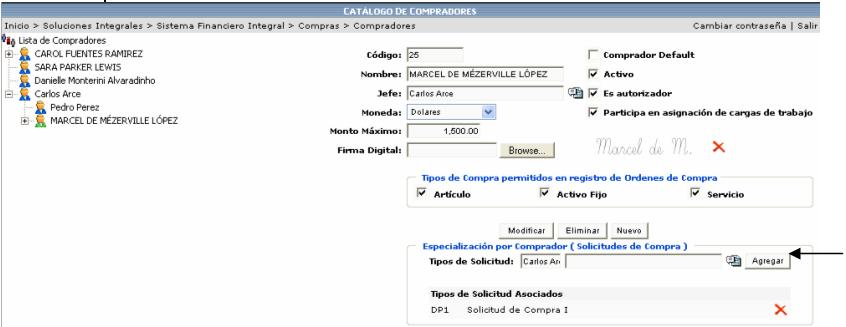

En este catálogo se van a crear los compradores, que son los encargados de realizar las órdenes de compra dentro del sistema; este mantenimiento además de crear los compradores, permite indicar los tipos de solicitudes que serán atendidos por cada comprador, definir la jerarquía de mando dentro de la empresa y los montos máximos de compra posibles por comprador.
Se debe de crear un código, asignarle un usuario, el jefe de ese usuario, la moneda y el monto máximo que puede trabajar. Si se deja el monto en cero, significa que no tiene un límite de monto. Seleccionar si esta activo, si es un comprador default; este indicador es de suma importancia ya que le indica al sistema si es un comprador “en uso” para realizar la asignación de cargas de trabajo al momento de aprobarse las solicitudes de compra por parte de los solicitantes de la empresa.
Es importante mencionar que los montos máximos de compra asociados a cada comprador se indican en una única moneda y es el sistema quien se encarga de realizar las conversiones requeridas a fin de definir si un comprador tiene o no la potestad de realizar una compra en una orden de compra en moneda diferente.
Además se le debe de asociar los tipos de compra (artículos, activos fijos o servicios) que podrá registrar en las órdenes de compra.
Para que un comprador, aparte de llevar a cabo el proceso de compra, sea un autorizador de la misma, se tiene que activar el check cuando se esta creando a dicho comprador.
Una vez creado el comprador, se le debe de asignar los tipos de solicitud con los que puede realizar órdenes de compra:

Otro aspecto a considerar es que en caso de no asignarse tipos de solicitud para la especialización del comprador, se le esta indicando al sistema que este comprador no realiza ese tipo de compras, por lo que la asignación de trabajo se realizará por centro funcional o por cargas de trabajo; el orden de asignación de trabajo a los compradores es el siguiente:
1. Centros funcionales asociados.
2. Especialización de tipos de solicitud.
3. Cargas de trabajo (cantidad de solicitudes pendientes de surtir).
4. Es o no el comprador por defecto del sistema.
Con base en los criterios anteriores la aplicación decide a quien debe asignarse una solicitud de compra; en caso de no encontrar ningún comprador que cumpla los criterios anteriores, la solicitud de compra es asignada al comprador definido como “default”.